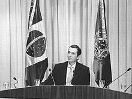

Curiosidades da década de 90
Nessa página vou mostrar algumas curiosidades da época.
Plano real
O Brasil já vinha sofrendo com a hiperinflação e instabilidade econômica e para consertar isso, o então presidente Fernando Henrique deu início ao plano real em 1 de julho de 1994 para diminuir e equilibrar a inflação no país
Impeachment de Fernando Collor
Fernando Collor disputou as eleições em 1989 e ganhou, em março de 1990 ele assumiu a presidência. Sua primeira medida foi combater a inflação na época com planos radiacais, como o confisco das poupanças (ou seja, quem tinha acima de 50 mil cruzados novos, a poupança era confiscada). No fim, não resolveu nada e começou escândalos de corrupção no governo. Em 29 de dezembro de 1992 Fernando Collor deixa a presidência e seu vice Itamar Franco assumiu.
Em 1999 Linha Direta volta com Marcelo Rezende
No início de 1999, Linha Direta retorna com o apresentador Marcelo Rezende. Esse programa na verdade, já teve uma outra edição com Hélio Costa em 1990, mas o programa se popularizou em 1999. O Linha Direta era exibido nas noites de quinta e era apresentado crimes que ocorreram no Brasil por autores foragidos. Planejo detalhar mais esse programa em um artigo futuro.